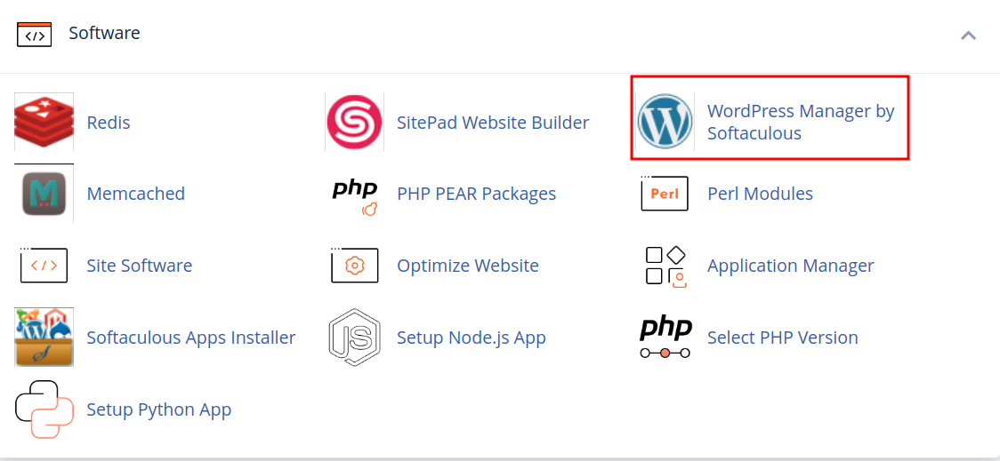
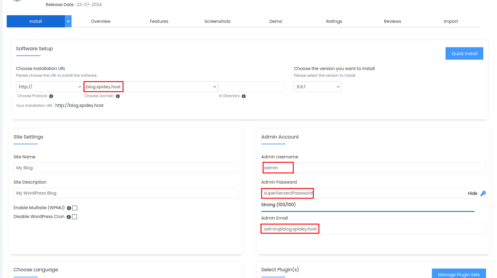
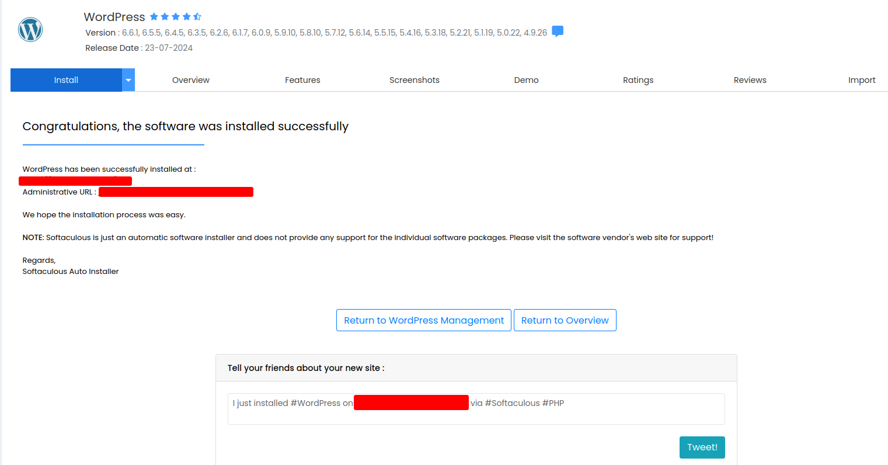

How to install wordpress in cPanel
Friday, Jul 12, 2024 | 2 minutes read | Update at Friday, Jul 12, 2024
cPanel is a popular control panel for managing web hosting. This guide will walk you through the process of installing WordPress via cPanel.
Prerequisites
Before you start, make sure you have cPanel web hosting package.
Get hosting packge at 20% discount use code SPIDEYNEW20 from spidey.host
Installation Guide
Access Your cPanel account
Begin by logging into your cPanel account

Step 2: Locate and Open the WordPress Installer
Once logged in, scroll to the Software section and click on WordPress under Site Software or Softaculous Apps Installer, based on your hosting provider. 
Step 3: Start the Installation
On the WordPress installer page, click the Install Now button.
Step 4: Configure the WordPress Installation
Provide the necessary details for your WordPress setup:
- Choose Protocol: Pick
http://orhttps://based on your SSL certificate. - Choose Domain: Select the domain where you want to set up WordPress.
- In Directory: Leave this field empty to install WordPress in the root directory or specify a folder name for installation in a subdirectory.
Site Settings
- Site Name: Enter the name of your site.
- Site Description: Provide a brief description of your site.
Admin Account
- Admin Username: Choose a username for the WordPress admin account.
- Admin Password: Set a strong password.
- Admin Email: Input your email address.
Database Settings
- Database Name: You can use the default name or create a new one.
- Table Prefix: Keep the default
wp_or change it for added security.

Step 5: Finalize the Installation
Once you’ve entered all the details, scroll down and click the Install button. The installation process will take a few minutes. Step 6: Access Your New WordPress Site
After the installation is complete, you’ll see a success message with the URL of your new WordPress site and the admin URL. Click the links to visit your site and log in to the WordPress admin dashboard.

Conclusion
Congratulations! You’ve successfully set up WordPress using cPanel. You can now begin customizing your site and adding content. If you run into any issues, consult the documentation provided by your hosting provider or seek help on the WordPress support forums.